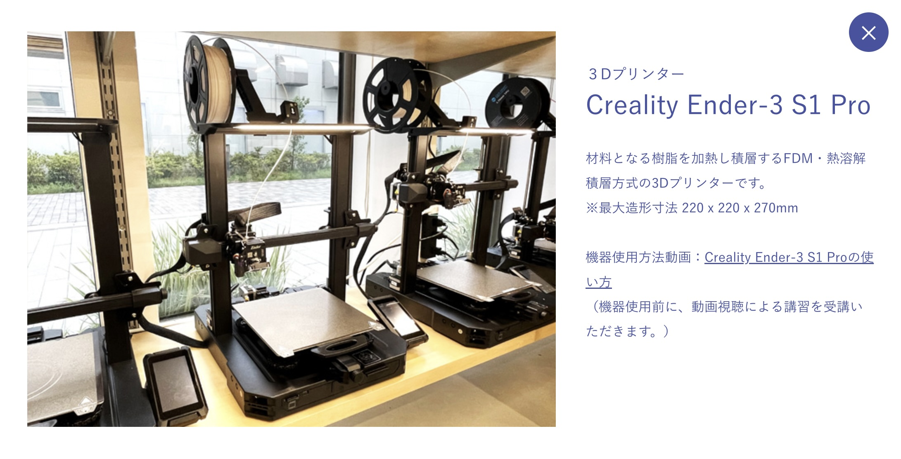

使用した機械
３Dスキャナー / ３Dプリンター

共同制作者
muku / タッカンマリ
mukuさんのページ
タッカンマリさんのページ
お互いに３Dスキャナーでスキャンし合い、作成しました。それぞれ1つずつスキャンしデータ化したのですが、
上手くスキャンするのがかなり難しく、1つしか上手にデータ化することができませんでした。
なので、1つのデータを収縮度を変えてそれぞれが３Dプリンターで制作しました。
実際に使用してみよう
実寸サイズの95％サイズで作成したため、リングがしっかり入ります。
使い方はさまざまで、下の写真のように腕時計だけでなくネックレスを指の間に引っ掛けるように置くこともできます。
・・・・・・・・・・・・・・・・・・・・・・・・・・・・・・・・・・・・・・・・・・・・・・・・・・・・・・・・・・・・・・
手のひらサイズのヘアクリップなども置くことができます。
中までしっかりと３Dプリンターでプリントしたため、少し重いもの（iPhone14Proぐらい）を置いても
かなりの安定感で置いて置くことができました。
・・・・・・・・・・・・・・・・・・・・・・・・・・・・・・・・・・・・・・・・・・・・・・・・・・・・・・・・・・・・・・
実際に部屋に置いてみると。。。
私の部屋の雰囲気にあったアクセサリースタンドができました。
置くアクセサリーの系統や飾り方を変えれば使う人それぞれに合ったアクセサリースタンドになると思います。
・・・・・・・・・・・・・・・・・・・・・・・・・・・・・・・・・・・・・・・・・・・・・・・・・・・・・・・・・・・・・・
YouTubeリンク
感想
後期から始まったデジタルファブリケーションの授業を通して、さまざまな方向から物事を考える力や
自分の頭の中で思い描いたものを実際に形にしてみることの大切さ大変さを学びました。
Design for Othersの授業では世の中の人々に役立つと考えられるものを作成したので、最終課題では
自分自身が欲しいもの、あったら使いやすいものを作成したいと考え、手の形をしたアクセサリースタンドを作成することにしました。
頭の中にあるアイデアを形にするのは簡単なことではありませんが、その分楽しく、
完成した時の達成感や次への反省などが見つかるなどかなりの達成感を感じることができました。